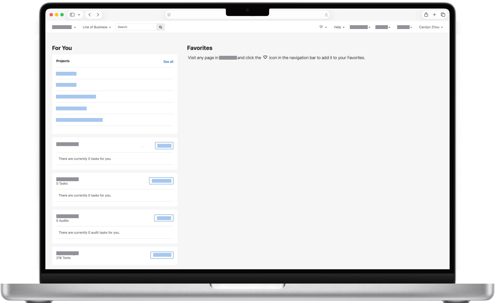
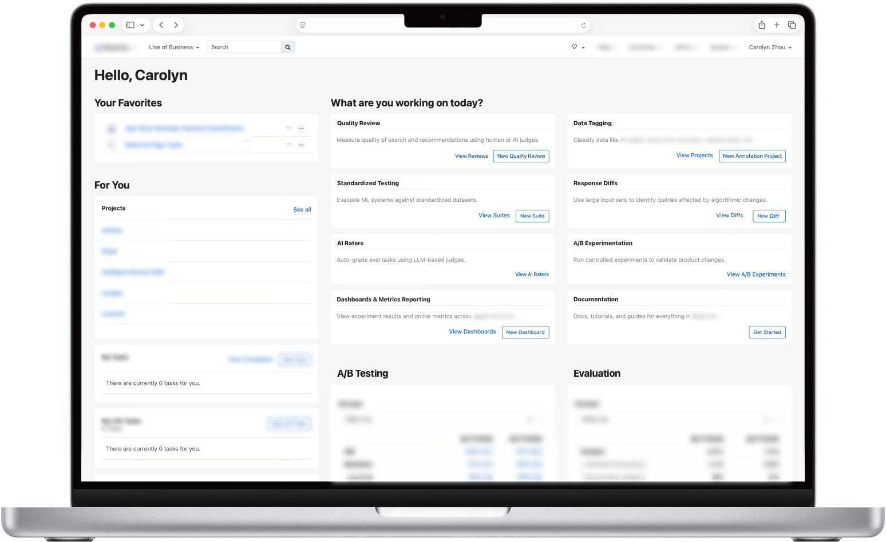
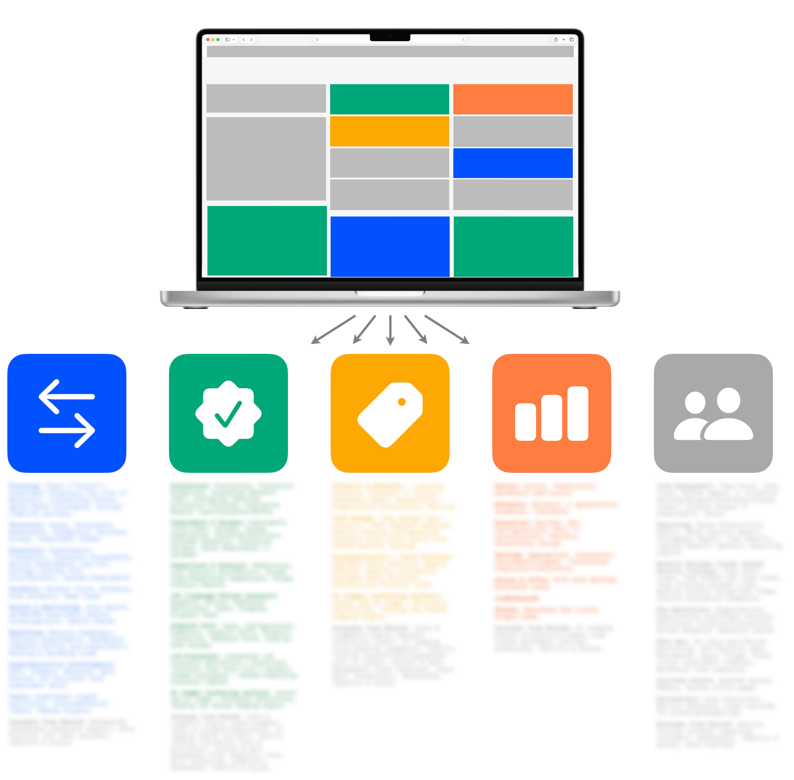
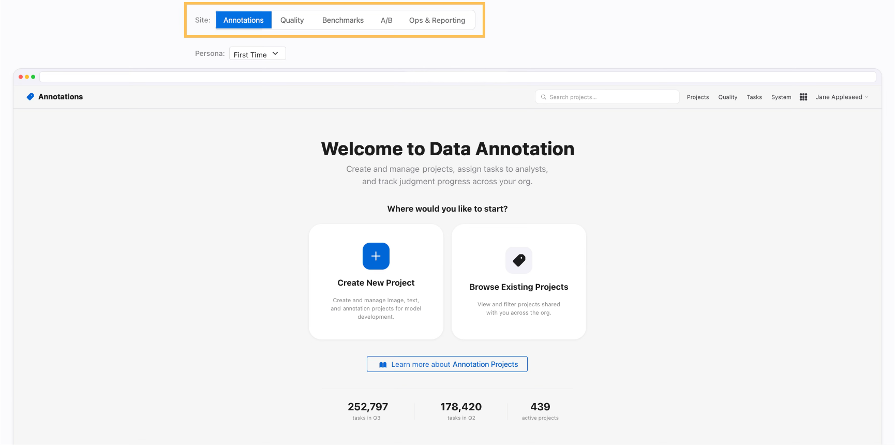
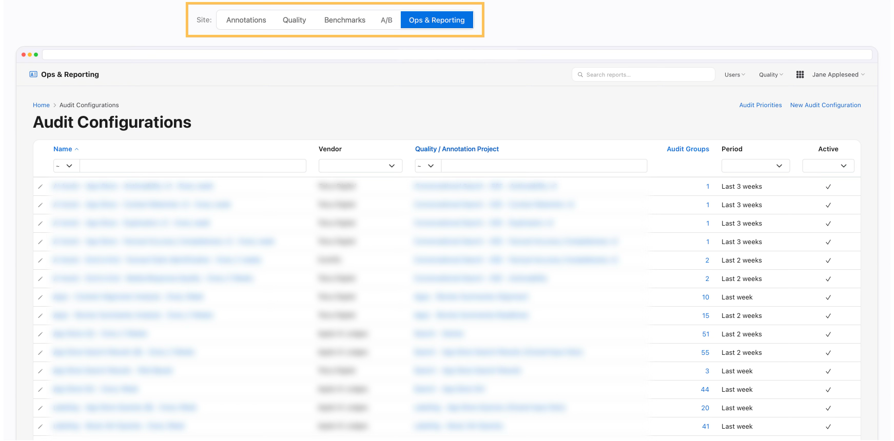
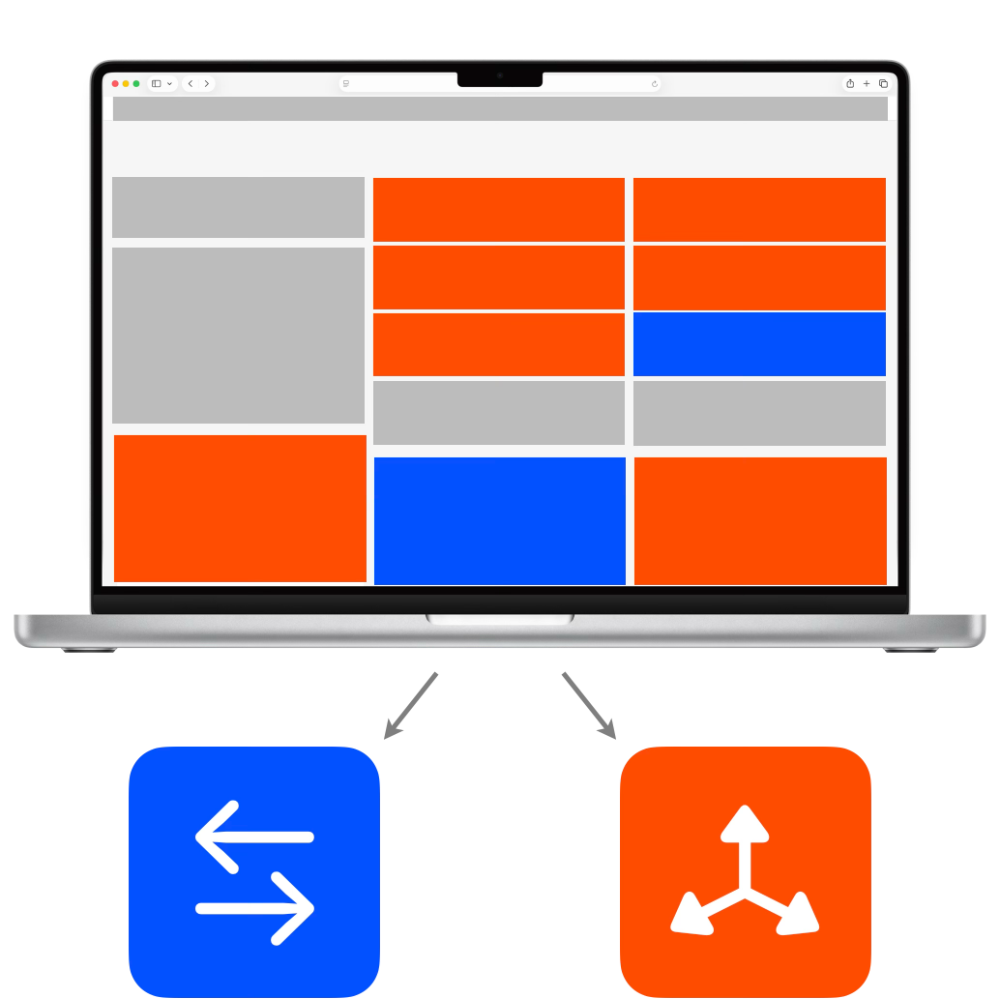
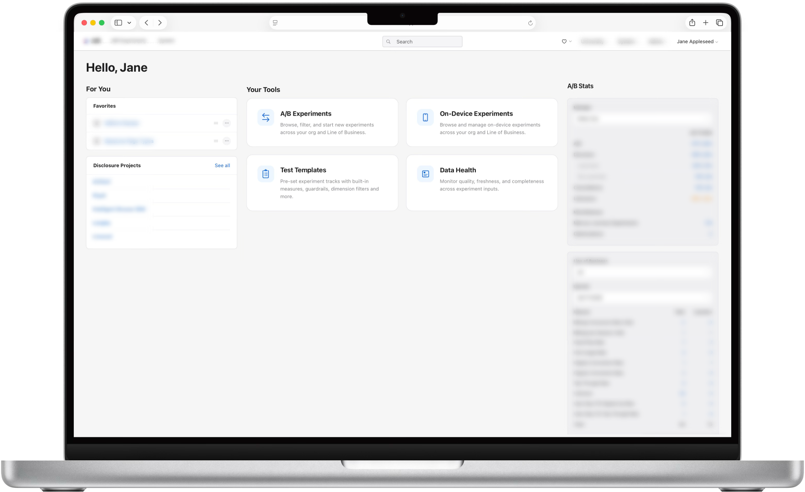
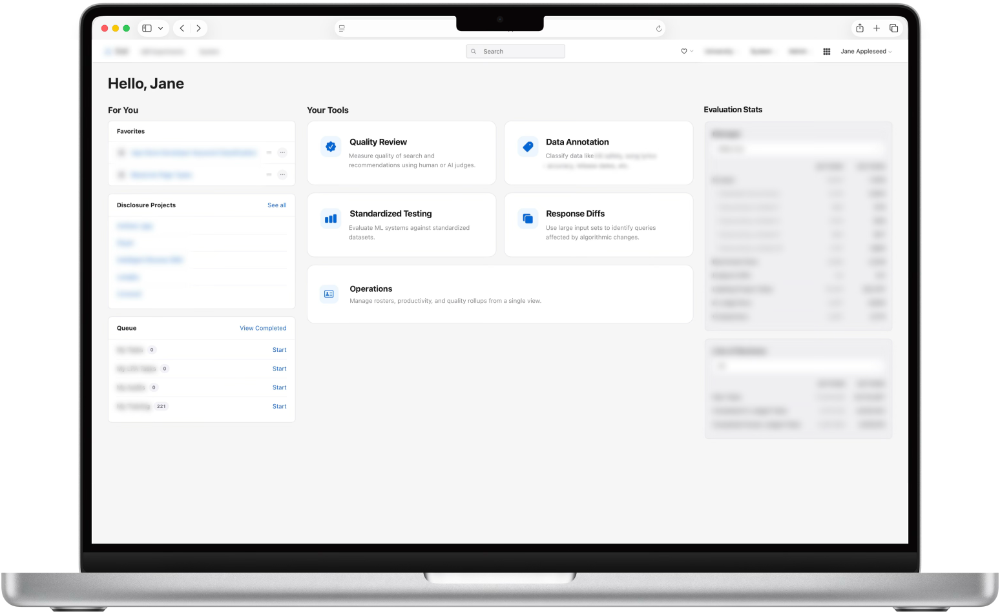
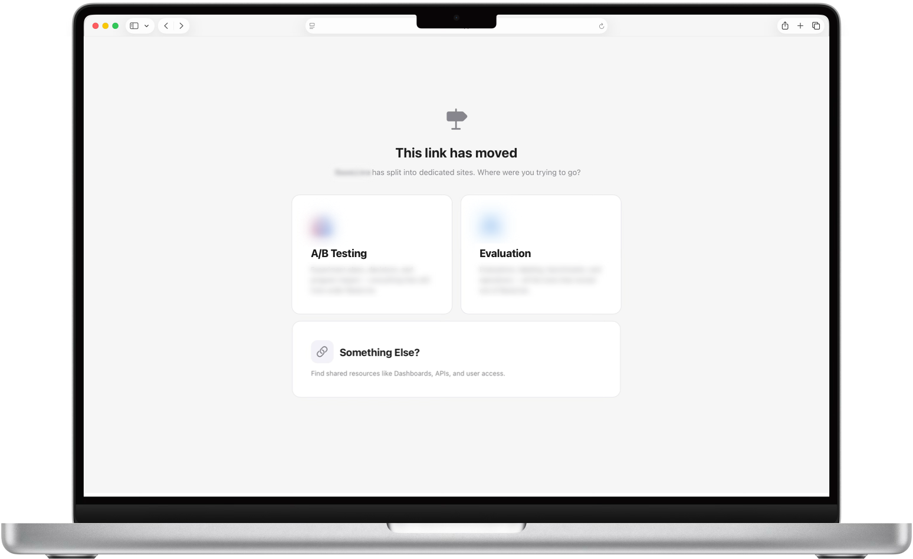

One internal platform had grown to cover five distinct workflows under a single roof. Features were hard to find, and it was getting harder for the team to reason about ownership as the platform scaled.
Mapped the platform's full feature set to find where functionality was genuinely shared versus workflow-specific, then used that map to plan a phased split into focused, single-domain tools. A working demo is still in progress.
My RoleLead Designer
AudienceEngineers, cross-org stakeholders
ToolsAI, Markdown, GitHub
The platform's home page was originally built around a user's favorites. However, we noticed many users weren't adding any; meanwhile we were adding new capabilities, each with complex workflows. They made the platform more powerful, but they were buried in menus. People weren't using what they didn't know was there.
We tried surfacing those features directly on the home page, along with stats on what the platform could do. But the page filled up and people still couldn't find what they needed. We'd added information that wasn't user-friendly and readable.
Discussion began about breaking the platform into separate dedicated tools, and I set out to test the idea.


I went through every workflow on the existing platform and sorted it into what looked like 5 core domains. For this process, I had an AI assistant scan the underlying codebase and catalog every piece of functionality. That also surfaced infrastructure that was shared across domains, i.e. user access, data pipelines, and management of vendors who work in more than one area.
With that map, I planned to handle the shared, cross-domain functionality on its own, separate from each domain's dedicated workflows, and I started building individual sites with clean, focused landing views.

Some workflows didn't split as cleanly as planned. One example is audit tasks: it made sense for raters to complete them in the Annotation tool alongside their other work, but where should the team requesting those audits configure them from? In the Annotation tool, in the Ops tool, have the option in both?


Rather than force a 5-way split upfront, phase 1 separates just the 2 workflows that decoupled most cleanly: Online A/B Testing and Offline Evaluation. This split kept tightly coupled workflows together instead of forcing a boundary that didn't match how people presently worked.

Phase 1 shipped two focused home pages, one for A/B Testing and one for Evaluation, each surfacing just the tools and stats relevant to that workflow instead of everything at once. I also added visual differentiation to the cards to create visual hierarchy, helping users navigate without changing the underlying functionality or actual navigation.


The split sites would get a new domain that's clear about what it is. But the existing domain would still get hit from bookmarks and old links, and it would not be clear to which site the user should be redirected. Therefore, we needed a lightweight reroute page for visitors landing on the old domain, asking where they meant to go.

Usage stats and outcomes to come.